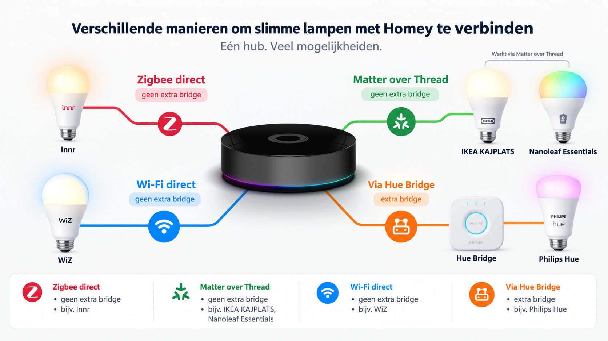

Het begint meestal onschuldig. Eén slimme lamp in de woonkamer, omdat het handig lijkt om vanaf de bank het licht te dimmen. Daarna volgt er nog eentje in de keuken, een lichtstrip achter de televisie en voor je het weet heb je meer apps voor verlichting dan lichtschakelaars aan de muur. Precies op dat moment wordt Homey interessant: niet omdat iedere lamp hetzelfde wordt, maar omdat al die verschillende systemen ineens in één huis kunnen samenwerken.
Alleen maakt Homey de keuze voor een lamp niet automatisch eenvoudiger. Philips Hue werkt via zijn eigen bridge, Innr gebruikt Zigbee, WiZ leunt op wifi en IKEA en Nanoleaf zetten inmiddels stevig in op Matter. Op de verpakking staat bij allemaal iets in de trant van “smart”, maar onder de motorkap zijn het behoorlijk verschillende dieren. Daarom vergelijk ik ze hier niet alleen op licht, maar vooral op de vraag die voor een Homey-gebruiker telt: hoe logisch past deze lamp in de rest van je slimme huis?
Kort samengevat
Wie vooral een compleet en volwassen verlichtingsecosysteem zoekt, komt nog steeds snel bij Philips Hue uit. Wie betaalbaar en modern met Matter wil beginnen, vindt in IKEA KAJPLATS een opvallend sterke kandidaat. Innr is interessant als je Zigbee rechtstreeks aan Homey wilt koppelen, WiZ houdt het eenvoudig via wifi en Nanoleaf is aantrekkelijk voor wie bewust richting Matter en Thread wil bouwen.
Eerst het belangrijkste verschil: hoe praat de lamp met Homey?
Bij een gewone lamp kijk je naar fitting, lichtsterkte en misschien de kleurtemperatuur. Bij een slimme lamp komt daar één vraag bij die eigenlijk nog belangrijker is: via welke route bereikt je commando de lamp? De huidige Homey Pro ondersteunt onder meer Zigbee 3.0, Matter en Thread en kan daardoor verschillende soorten verlichting naast elkaar gebruiken. Dat is precies de kracht van Homey, maar het betekent ook dat “werkt met Homey” niet voor iedere lamp hetzelfde betekent.
Een Philips Hue-lamp loopt in de officiële Homey-integratie bijvoorbeeld via de Hue Bridge. Een Innr-lamp kan als Zigbee-apparaat rechtstreeks in het Zigbee-netwerk van Homey worden opgenomen. WiZ gebruikt je bestaande wifi. En bij Matter-lampen van IKEA en Nanoleaf kan Homey Pro zelf de rol van Matter-controller spelen. Het eindresultaat lijkt in de Homey-app hetzelfde, een lamp die je kunt aanzetten, dimmen of van kleur laten veranderen, maar de weg ernaartoe verschilt behoorlijk.
- Zigbee → een apart mesh-netwerk voor slimme apparaten. Homey Pro kan zelf als Zigbee-coördinator werken, waardoor bijvoorbeeld Innr rechtstreeks gekoppeld kan worden.
- Matter over Thread → een moderne route waarbij Homey Pro een Matter-controller en Thread Border Router kan zijn. De nieuwe IKEA KAJPLATS-lampen gebruiken deze combinatie.
- Wi-Fi of een merkbridge → WiZ sluit rechtstreeks op je 2,4GHz-wifi aan, terwijl Philips Hue in de officiële Homey-app via de Hue Bridge wordt gekoppeld.

Philips Hue: de bekende route met een eigen brug ertussen
Philips Hue is een beetje de oude rot aan tafel. Niet de goedkoopste gast, wel degene die al jaren precies weet waar alles staat. De actuele Hue White and Color Ambiance A60 met E27-fitting levert tot 1100 lumen en gebruikt Zigbee en Bluetooth. Voor Homey is vooral één detail belangrijk: de officiële Philips Hue-app van Homey vereist een Hue Bridge. Homey praat dus met de bridge, en de bridge praat vervolgens met je lampen. Dat is een extra kastje, maar het levert ook een duidelijk afgebakend verlichtingssysteem op. Bekijk hier de Philips Hue-lamp.
Juist wanneer je al Hue-lampen, dimmers, bewegingssensoren of andere Hue-accessoires hebt, zou ik niet moeilijk doen om één bridge uit de meterkast te verbannen. Homey voegt daar vooral iets aan toe: Hue hoeft niet langer alleen met Hue samen te werken. Een lamp kan reageren op een Fibaro-sensor, een IKEA-knop of een Flow waarin ook muziek, zonwering en energieverbruik meedoen. Begin je helemaal vanaf nul, dan is de hogere instapprijs wel iets om bewust mee te nemen.
De uitdagers: IKEA, Innr, WiZ en Nanoleaf
IKEA KAJPLATS, de opvallend goedkope Matter-route.
De nieuwe KAJPLATS E27-kleurlamp levert 1055 lumen en gebruikt Matter over Thread. Dat betekent dat je geen klassieke Zigbee-bridge van IKEA nodig hebt wanneer je hem aan een geschikte Matter-controller met Thread koppelt. Homey Pro kan die rol vervullen. Daarmee is KAJPLATS vooral interessant als je vandaag opnieuw zou beginnen en zo min mogelijk merkgebonden infrastructuur wilt opbouwen.
Innr — voor wie Zigbee gewoon Zigbee wil laten zijn.
Innr heeft met de actuele E27 Colour-lampen een vrij traditionele aanpak: Zigbee 3.0, wit én kleur en koppeling met een Zigbee-hub. Homey heeft een officiële Innr-app en kan de lamp rechtstreeks via Zigbee opnemen. Daardoor heb je geen aparte Innr-bridge nodig wanneer Homey Pro al het middelpunt van je installatie is. De 1200-lumenvariant haalt volgens Innr 1210 lumen. Bekijk hier de Innr E27 Colour.
WiZ — schroeven, wifi, klaar.
WiZ kiest een andere route. De full-colour E27-lampen werken via 2,4GHz-wifi en hebben geen losse bridge nodig. De huidige A60-kleurlamp levert tot 806 lumen en is via de WiZ Connected-app aan Homey te koppelen. Voor een paar lampen is dat heerlijk overzichtelijk: je bestaande netwerk doet het transportwerk. Bouw je een compleet huis vol verlichting, dan voeg je wel voor iedere lamp opnieuw een wifi-client toe. Bekijk hier een WiZ E27-kleurlamp.
Nanoleaf — Matter als uitgangspunt, niet als extra vinkje.
Nanoleaf verkoopt zijn E27 Smart LED Bulbs zowel als Matter-over-Thread- als Matter-over-Wi-Fi-variant. De Thread-uitvoering past inhoudelijk mooi bij een recente Homey Pro, omdat Homey zelf Thread Border Router kan zijn. De huidige lampen halen tot 1000 lumen, bieden instelbaar wit en kleur en staan ook als Matter E27-lamp in de officiële Nanoleaf-app voor Homey. Bekijk hier de Nanoleaf Smart LED Bulb.
Waar ik bij slimme lampen voor Homey vooral op zou letten
De verleiding is groot om de doos met de meeste logo’s te kopen. Matter, Alexa, Google, Homey, zestien miljoen kleuren, klaar. Alleen merk je pas na een paar weken welke eigenschappen er echt toe doen. Voor mij zou de volgorde daarom andersom zijn: eerst bepalen hoe de lamp in je netwerk past, daarna pas kijken welke kleur paars hij kan maken.
- Direct koppelen is niet automatisch beter. Een Hue Bridge is extra hardware, maar houdt het Hue-verlichtingssysteem ook als eigen netwerk bij elkaar. Rechtstreeks koppelen aan Homey is vooral aantrekkelijk als je juist minder bridges wilt.
- Een slimme lamp heeft continu voeding nodig. Zet iemand de klassieke wandschakelaar uit, dan is ook de slimste Flow ineens machteloos. Denk daarom bij veelgebruikte ruimtes ook na over slimme schakelaars of knoppen.
- Lichtkwaliteit blijft belangrijker dan het protocol. Kijk naast Homey-compatibiliteit ook naar lumen, witbereik, kleurweergave en hoe ver een lamp daadwerkelijk kan dimmen.
Daar komt nog iets bij: Homey haalt een deel van de merkkeuze uit de vergelijking. Je hoeft niet per se dezelfde bewegingssensor, knop en lamp van hetzelfde merk te kopen. Juist daardoor kun je een duurdere lamp inzetten waar lichtkwaliteit belangrijk is en een eenvoudiger model gebruiken op plekken waar vooral “aan”, “uit” en “dimmen” telt. Dat is uiteindelijk een veel slimmere manier van besparen dan overal automatisch het goedkoopste model indraaien.
Welke slimme lamp zou ik zelf bij Homey kiezen?
Als ik vandaag een Homey-huis vanaf nul zou opbouwen, zou ik niet één winnaar voor het hele huis aanwijzen. Philips Hue blijft mijn logische keuze wanneer ik een uitgebreid en volwassen verlichtingssysteem met veel eigen accessoires wil. IKEA KAJPLATS zou ik serieus bekijken voor ruimtes waar ik betaalbaar Matter-over-Thread wil inzetten. Innr past mooi wanneer ik liever een directe Zigbee-koppeling met Homey gebruik. WiZ is aantrekkelijk voor een kleine installatie zonder bridge, terwijl Nanoleaf vooral interessant is wanneer Matter en Thread bewust het vertrekpunt van je smart home worden.
En heb je al twintig Hue-lampen hangen? Dan zou ik vooral géén technisch schoonheidsideaal najagen. Laat ze hangen. Homey is juist gemaakt om oude en nieuwe keuzes met elkaar te laten samenwerken. De slimste lamp is daarom zelden de lamp met de modernste sticker op de doos. Het is de lamp die past bij het netwerk dat je al hebt, of bij het netwerk dat je bewust wilt gaan bouwen.
Volgende stap
Mijn advies is om niet meteen het hele huis van één merk te voorzien. Kies één ruimte, bepaal wat je daar echt nodig hebt en probeer één verbindingsroute uit. Een woonkamer met scènes en veel bediening stelt andere eisen dan een berging waar een lamp alleen automatisch aan hoeft te gaan.
- Nieuwsgierig naar Matter als basis voor je eigen projecten? Lees dan hoe ik zelf een Matter-sensor ben gaan bouwen.
- Wil je verlichting juist tastbaar kunnen bedienen? Bekijk dan ook mijn artikel over de Homey Portal.
- Wil je verder vergelijken voordat je koopt? Bekijk dan het overzicht met reviews op HuisvanVandaag.
Conclusie
Homey maakt de keuze voor slimme verlichting tegelijk makkelijker én interessanter. Makkelijker, omdat Hue, IKEA, Innr, WiZ en Nanoleaf uiteindelijk in dezelfde Flows terecht kunnen komen. Interessanter, omdat je daardoor niet meer per se één merk hoeft te kiezen. Hue biedt het meest uitgewerkte eigen ecosysteem, IKEA maakt Matter-over-Thread opvallend toegankelijk, Innr blijft een nuchtere Zigbee-keuze, WiZ houdt de hardware eenvoudig met wifi en Nanoleaf bouwt duidelijk richting Matter. Mijn belangrijkste les zou daarom zijn: koop niet eerst een slimme lamp en bedenk daarna hoe je hem koppelt. Kies eerst hoe je wilt dat je huis communiceert, en schroef daarna pas de lamp in de fitting.